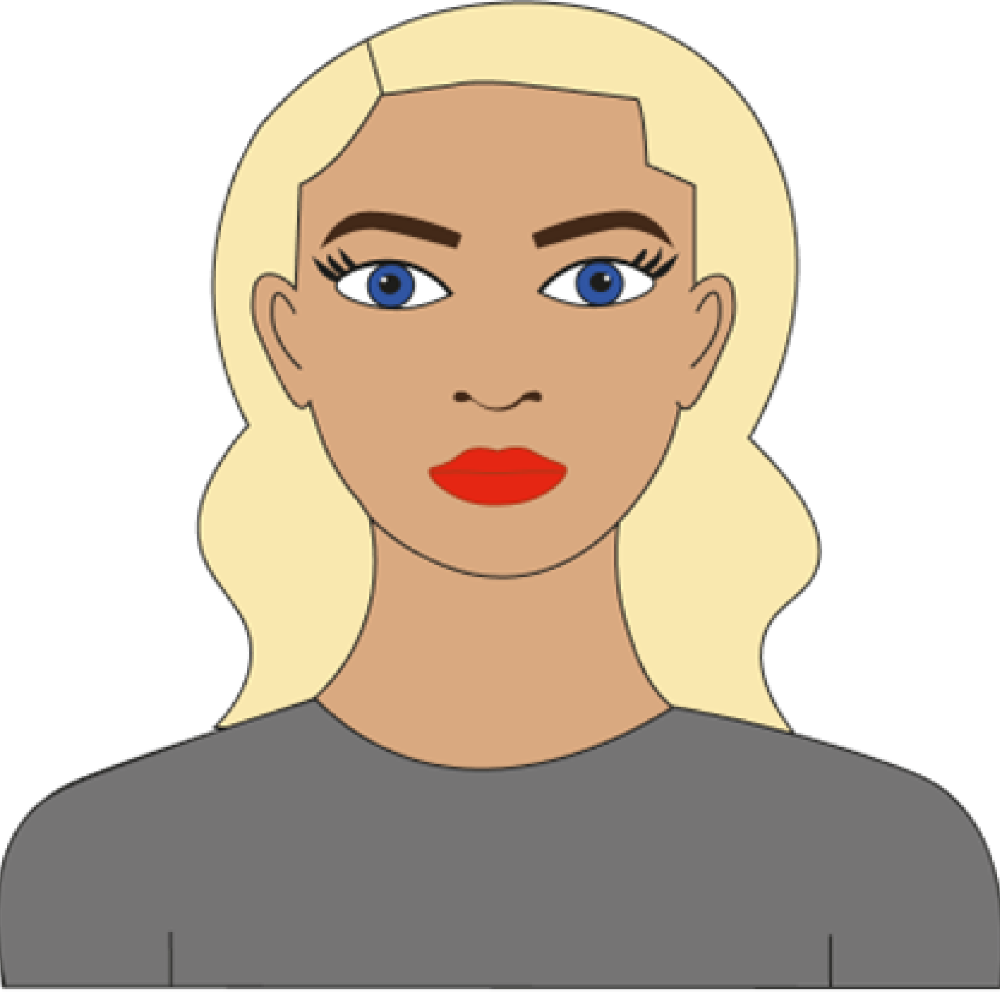
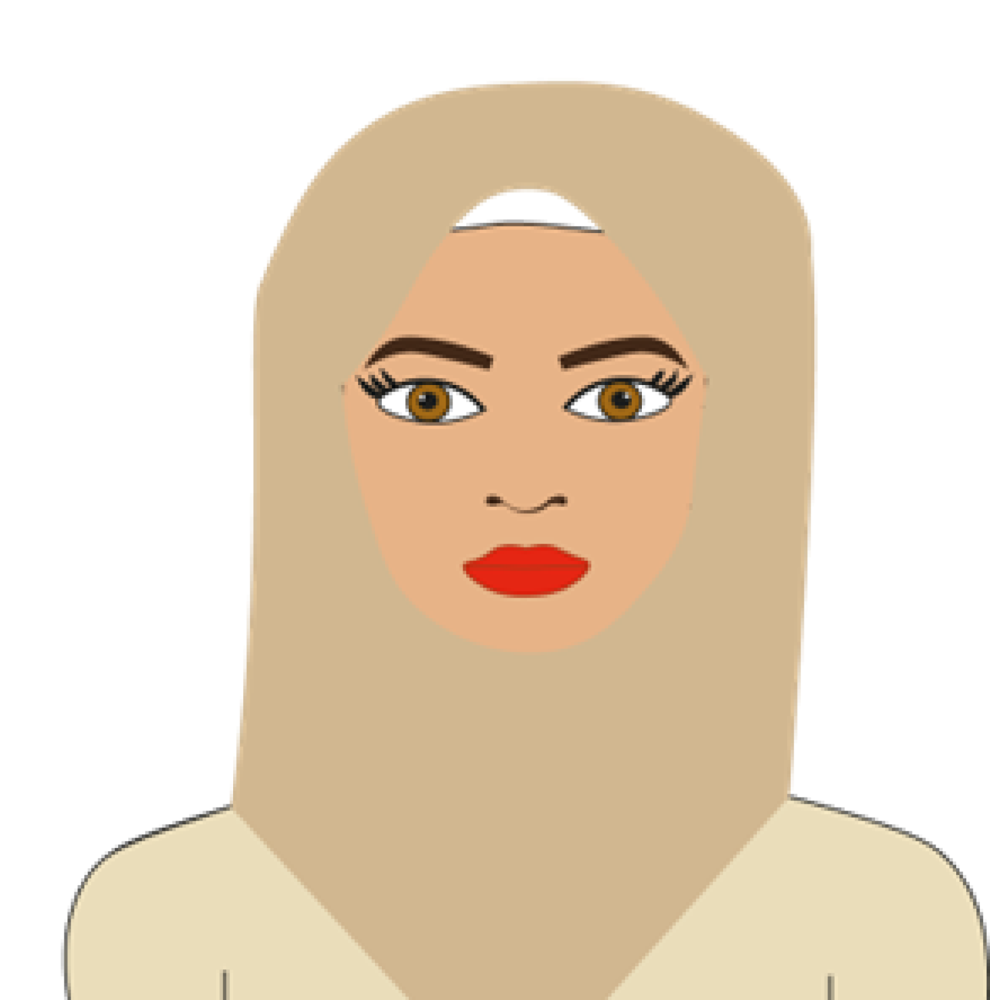
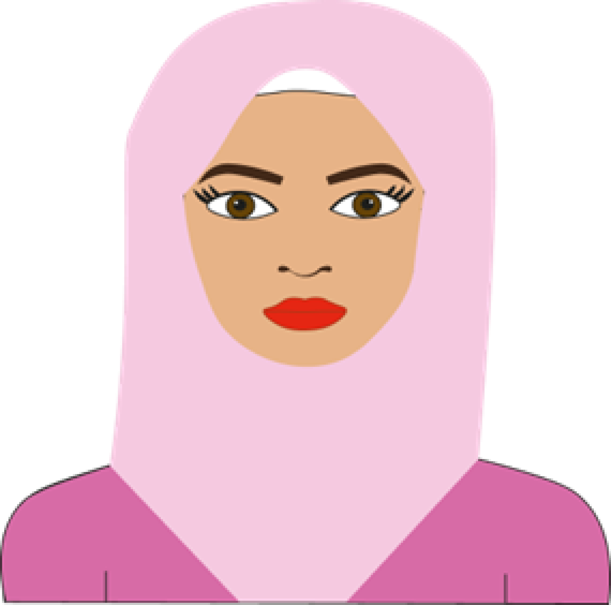

Over ons
Julia Poort
Hoi ik ben Julia Poort 18 jaar. Ik ben student Communicatie en Multimedia Design aan de hogeschool van Amsterdam. Ik hou ervan om creatief bezig te zijn en vindt het heel leuk om nieuwe dingen te leren. In het dagelijks leven hou ik veel van sportief bezig zijn. Ik zit op voetbal en ik ben ook vaak in de sportschool te vinden. Daarnaast hou ik ervan om lekker bij te kletsen met mijn vriendinnen. Ook feestjes sla ik niet vaak over.
Israe Agarouassay
Ik ben Israe Agarouassay 17 jaar. Ik ben één van hosts en oprichters van deze podcast. Momenteel studeer ik Communication & Multimedia design aan de Hogeschool van Amsterdam. In mijn dagelijkse leven hou ik ervan om creatief bezig te zijn en te sporten. Daarnaast hou ik van gezelligheid en vooral met de mensen die dicht bij me staan. Naast mijn passies vind ik het heel interessant hoe onopgeloste moordzaken vol onbeantwoorde vragen zitten. Onopgeloste moordzaken hebben altijd al mijn interesses getrokken door de raadsels, onbeantwoorde vragen en de verhalen die eigenlijk een stem verdienen. Met deze podcast willen wij niet alleen de spanning van deze verhalen met jullie delen, maar ook om mensen aan te moedigen om na te denken over wat er nog over het hoofd wordt gezien. Daarnaast willen wij ook samen met jullie zoeken naar antwoorden in zaken die nooit zijn afgesloten.
Souhaila Bachoukh
Ik ben Souhaila. Ik ben één van de hosts en oprichters van dit podcastkanaal, Ik studeer Communication & Multimedia Design aan de Hogeschool van Amsterdam. In het dagelijks leven hou ik van sporten, shoppen en reizen. Verder ben ik van mezelf een rustig persoon, maar hou ik meestal wel van gezelligheid. Ik ben erg geïnteresseerd in onopgeloste moordzaken en hopelijk zul jij net zoveel plezier ervaren tijdens het luisteren naar de podcast als dat ik ervaar met het opnemen ervan. Wij zijn begonnen met deze podcast, omdat onze interesses liggen bij horrorverhalen en specifiek onopgeloste moordzaken. Als team vonden wij ook dat er minder wordt gekeken naar onopgeloste moordzaken en het meer op de achtergrond blijft liggen. Daarom wilde wij met de onderwerpen die wij zullen bespreken deze zaken weer centraal stellen en bewustwording creëren.
